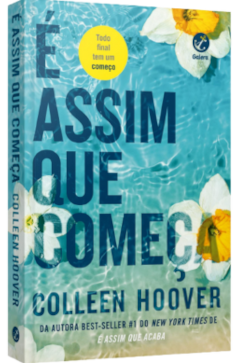
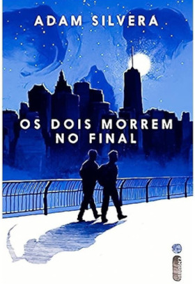
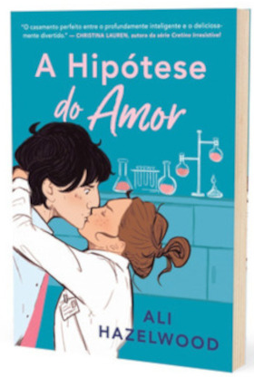

Lily e o seu ex-marido, Ryle, acabaram de se adaptar numa situação de compartilhamento de guarda quando, de repente, ela se reencontra com seu primeiro amor, Atlas. Depois de quase dois anos separados, o tempo finalmente parece estar ao favor de ambos, e Lily imediatamente aceita o convite para um encontro. Entretanto, sua empolgação é rapidamente prejudicada pelo conhecimento de que, embora não sejam mais casados, Ryle ainda se faz presente na sua vida. E Atlas Corrigan é o único homem que ele odiará estar na vida de sua ex-esposa e filha. Alterando entre as perspectivas de Lily e Atlas, “É Assim que Começa” inicia exatamente onde o epílogo terminou. O livro revela mais sobre o passado de Atlas e acompanha Lily enquanto ela abraça uma segunda chance ao amor verdadeiro, e navega sua relação com um ex-companheiro ciumento.
1. É Assim Que Começa
Compre Aqui
2. Os Dois Morrem No Final
No dia 5 de setembro, pouco depois da meia-noite, Mateo Torrez e Rufus Emeterio recebem uma ligação da Central da Morte. A notícia é devastadora: eles vão morrer naquele mesmo dia. Os dois não se conhecem, mas, por motivos diferentes, estão à procura de um amigo com quem compartilhar os últimos momentos, uma conexão verdadeira que ajude a diminuir um pouco a angústia e a solidão que sentem. Por sorte, existe um aplicativo para isso, e é graças a ele que Rufus e Mateo vão se encontrar para uma última grande aventura: viver uma vida inteira em um único dia. Uma história sensível e emocionante, Os dois morrem no final nos lembra o que significa estar vivo. Com seu olhar único, Adam Silvera mostra que cada segundo importa, e mesmo que não haja vida sem morte, nem amor sem perda, tudo pode mudar em 24 horas.
Compre Aqui
3. A Hipótese do Amor
Quando um relacionamento falso entre cientistas encontra a irresistível força da atração, as teorias de uma mulher sobre o amor, cuidadosamente calculadas, são postas à prova. Olive Smith, uma estudante de doutoramento em Biologia, não acredita em namoros duradouros. Após terminar o relacionamento com Jeremy, percebe que a sua melhor amiga, Anh, gosta dele e decide juntá-los. Para a convencer de que não se importa e de que está feliz e a namorar, Olive precisa de o provar, mas, pressionada, entra em pânico e resolve beijar o primeiro homem que vê: Adam Carlsen, um jovem professor de outro departamento. Olive acaba por ficar chocada ao perceber que este tirano do laboratório da Universidade de Stanford, conhecido por deixar os estudantes em lágrimas, aceita manter a farsa e fingir que é, realmente, seu namorado. Quando uma conferência científica corre mal e ameaça a carreira de Olive, Adam surpreende-a de várias formas… e uma pequena possibilidade científica, o que era apenas uma hipótese sobre o amor, transforma-se então numa experiência inesperada. Uma história maravilhosa imersa num ambiente académico. Um tubo de ensaio para a vida.
Compre Aqui